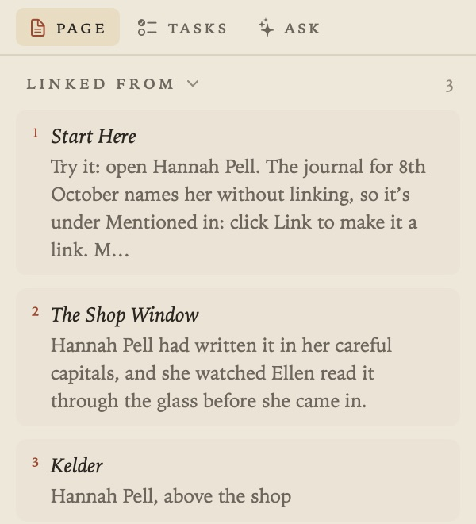
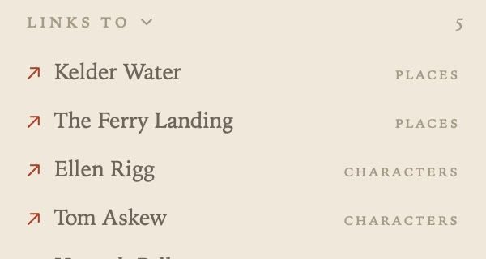
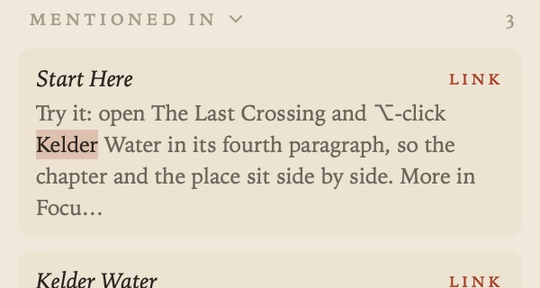
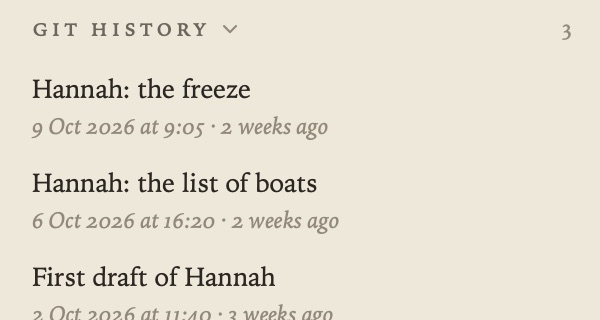
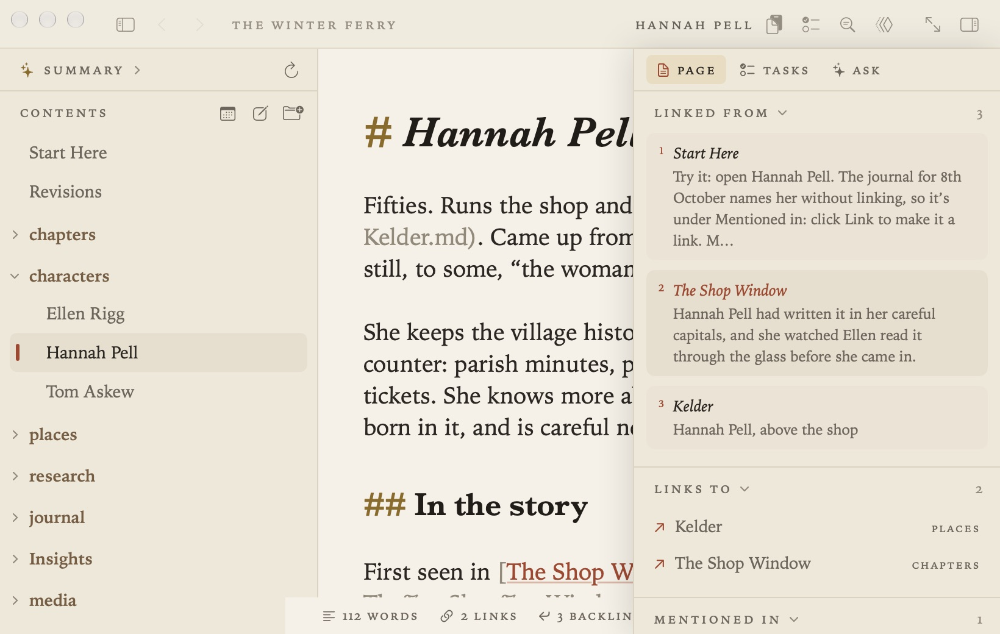

The Margin
The margin on the right shows how the open document connects to the rest of your project. View ▸ Show Margin (⌃⌥⌘S), or the button at the right of the running head, shows or hides it. Drag its edge to make it wider or narrower.

The margin has three tabs: Page (the document you’re on), Tasks (⇧⌘T) and Ask (⇧⌘A). This guide is about the Page tab; see Tasks and Due Dates and Ask Your Documents and AI for the others.
Linked from
Every document that links to the open document, each as a numbered sidenote with the line that does it. Click a sidenote to open that document at the link.

If another document links to a passage in this one, a small number beside the passage matches its sidenote. Point at the number to see the passage highlighted; point at the sidenote to see which passage it quotes.
Links to
The documents the open document links to, with the folder each is in.

Mentioned in
Documents that name the open document, by its title, without linking to it. The words are highlighted. Click one to open the document at the mention, or click Link to turn the mention into an ordinary link, with Undo.

If a document goes by other names, list them in its front matter and those are found too:
---
aliases: [Peggy, Mrs Hill]
---
Very short names, dates and mentions inside headings, code and existing links are left out.
Git History
If your project folder is a git repository, Git History lists the commits that changed the open document, following it through renames. Choose one to see that version and what has changed since, then Restore This Version to bring it back as a single step you can undo, or Copy it. Git History is closed until you open it.

See Saving, Safety and Git for committing automatically.
When the window is narrow
When there isn’t room for the contents, the page and the margin side by side, the margin hides first. Show it again and it floats over the page. Focus mode hides it too.
